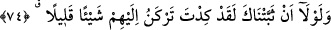
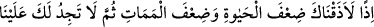
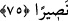

(s.a.)’den bir azâb âyetinin yerine bir rahmet âyeti koyması, Hacer-i Esved’i
selâmlarken onların putlarına dokunması, zayıf ve fakirleri etrafından dağıtması ve
benzeri isteklerde bulunup O’nu müslüman olacakları konusunda ümitlendirdiler.
Rivâyetlere göre o da bu isteklerin bazılarına sıcak bakmaya başlar gibi oldu. Bunun
üzerine bu âyet indi.
“Müşrikler, sana vahyettiğimizden başka bir şeyi yalan yere bize isnâd etmen için
seni, nerdeyse, sana” emir, nehiy, vaad ve vaîd/tehditler şeklinde “vahyettiğimizden
saptıracaklar” ayağını kaydırarak fitneye düşürecekler, seni aldatacaklar “ve ancak o
takdirde seni candan dost kabul edeceklerdi” o zaman sen onların dost ve arkadaşı
olur ama, benim dostluğumdan çıkardın.
74. Eğer seni sebatkâr kılmasaydık, gerçekten, nerdeyse onlara birazcık
meyledecektin.
“Eğer seni” hak üzere “sebatkâr kılmasaydık,” ve korumasaydık “gerçekten,
nerdeyse onlara birazcık meyledecektin.” Yâni, hile ve oyunlarının güçlü ve etkili
olması sebebiyle neredeyse onların isteklerine azıcık da olsa meyledecektin. Fakat
ismet/Allah’ın koruması sana yetişti ve seni onlara meylin kendisi şöyle dursun, en alt
derecesine bile yaklaşmaktan korudu. Bu ifâde güçlü sâikler bulunmasına rağmen Hz.
Peygamber (s.a.)’in onların istekleri doğrultusunda hareket etmeye niyetlenmediği
konusunda açık bir ifâdedir. Aynı zamanda ismetin/günahtan korunmanın Allah’ın tevfik
ve yardımıyla olduğuna delildir.
Büyüklerden biri şöyle demiştir: Allah Teâlâ meyli azlıkla nitelemiştir. Çünkü, Hz.
Peygamber (s.a.)’in rûhâniyeti asıl yaratılışta beşeriyet vasfına gâlipti. Çünkü, o zaman
rûhunu Allah’tan alıkoyacak hiçbir şey yoktu. Buna göre mânâ şöyledir: Şâyet seni sâbit
kılmamız, peygamberliğin gücü, hidâyetin nûru, inâyet nazarının te’siri olmasaydı,
rûhâniyet nûrunun galebesi ve beşeriyet nûrunun sönüvermiş olması dolayısıyla insânî
menfaatler için nefsânî hevâsı olan hevâ ehline neredeyse azıcık meyledecektin.
75. O zaman, hiç şüphesiz sana hayatın ve ölümün sıkıntılarını kat kat tattırırdık;
sonra bize karşı kendin için bir yardımcı da bulamazdın.
Şâyet onlara azıcık meyletseydin “O zaman, hiç şüphesiz sana” dünyadaki “hayatın
ve ölümün” âhiret hayatının da “sıkıntılarını kat kat tattırırdık;” yâni senden başka